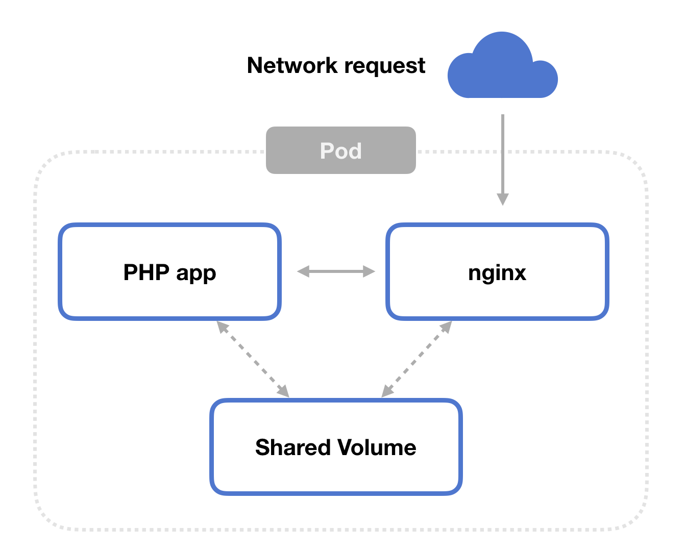

PHP-FPM, Nginx, Kubernetes, and Docker
This is a guide to running Nginx and PHP-FPM on Kubernetes.
You’ll get an overview of each component in the environment,
plus complete source code for running an application using
PHP-FPM and Nginx on Kubernetes.
Overview
PHP-FPM
PHP is a scripting language used for web development.
CGI scripts are a way to run a script on the server when
that server receives a HTTP request. Fast-CGI
is an improvement on CGI which is—yep—faster.
PHP-FPM is an implementation of Fast-CGI for PHP with
improved capabilities around process management,
logging, and high traffic situations.
Nginx
Nginx is a web server and reverse proxy that’s widely
used for high traffic applications. When run in combination
with PHP-FPM, Nginx is configured to send requests for .php
routes to PHP-FPM to serve the page.
Kubernetes and Docker
Kubernetes and Docker run our Nginx and PHP-FPM processes
in a Kubernetes cluster. We’ll create a Docker image
that includes our application code, and configure a pod
to run containers from that image in Kubernetes.
Together
In combination, Nginx serves web pages, passing requests for
.php files to PHP-FPM. PHP-FPM takes the request from Nginx,
handles dynamic processing of PHP, and gives the result back.
Docker packages up our application, and Kubernetes makes sure
it’s running.
Solution
PHP-FPM and Nginx need to have access to the same files on the
filesystem. In Kubernetes, this means they need to be running
on the same pod, and we’ll use a volume to share files
between the two containers.

Code
Step 1: the PHP app
Create your PHP application. In this article, we’ll use a simple
hello world example. Create this file and call it hello.php.
Step 2: the Dockerfile
Now create a Dockerfile based off the FPM variant of PHP, which is
php:7.2-fpm for us. Copy your PHP source code into a directory in
that Docker image.
Step 3: the ConfigMap
Let’s get into Kubernetes-land.
We’re going to have two containers running in the pod.
One runs PHP-FPM to handle dynamic PHP processing,
and the other runs nginx to act as a web server. Both
containers read from a shared volume.
We need to set up our configuration settings for the
nginx container we’ll create.
Here, we tell nginx to send any request for a *.php file to our PHP-FPM
application via localhost:9000.
Step 4: the Pod
Finally, we can create the Kubernetes pod that runs our
application container and the nginx web server sidecar.
Be sure to read through the comments in the gist.